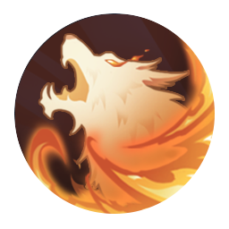
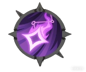
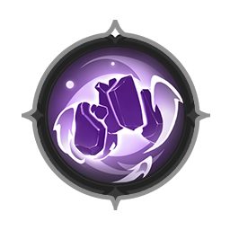
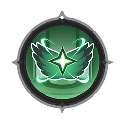

Kỹ Năng Hiền Giả
Kỹ Thuật Hiền Giả (Sage)
| Biểu tượng | Tên | Loại | Mô tả | Hình ảnh |
|---|---|---|---|---|

|
Treantling Summon | Triệu Hồi
Sát Thương |
Triệu hồi một Treantling phía sau người thi triển, nó hành động ngay lập tức. Triệu hồi vật thừa hưởng một tỉ lệ chỉ số của người thi triển, nhưng không thể là mục tiêu chính của các đòn tấn công hoặc hồi máu. Nó tồn tại tối đa 5 lượt. (Không có hồi chiêu ban đầu) | |
| Shadow Impact | Sát Thương | Chọn 1 ô trong phạm vi 3 ô quanh người thi triển. Gây Sát Thương Bóng Tối 1 lần lên tất cả kẻ địch trong phạm vi 2 ô quanh ô mục tiêu đó. Nếu mục tiêu địch đang mang Ăn Mòn (Erosion), kích hoạt hiệu ứng Ăn Mòn ngay lập tức 2 lần. | ||
 |
Flame Wolf Summon | Triệu Hồi
Sát Thương |
Triệu hồi 2 Flame Wolf phía trước người thi triển, chúng hành động ngay lập tức. Các triệu hồi vật thừa hưởng một tỉ lệ chỉ số của người thi triển, nhưng không thể là mục tiêu chính của các đòn tấn công hoặc hồi máu. Chúng tồn tại tối đa 2 lượt. (Không có hồi chiêu ban đầu) | |
 |
Dark Bullet | Sát Thương
Debuff |
Tấn công 1 kẻ địch trong phạm vi 4 ô quanh người thi triển, gây Sát Thương Bóng Tối 1 lần, với 50% tỉ lệ cơ bản gây Ăn Mòn (Erosion). | |
| Radiant Restoration | Đồng Minh
Hồi Máu |
Hồi máu cho tất cả đồng minh trong phạm vi 4 ô quanh người thi triển 1 lần. | ||

|
Weakening Hex | Sát Thương
Debuff |
Chọn 1 ô trong phạm vi 3 ô quanh người thi triển. Gây Sát Thương Bóng Tối 1 lần lên tất cả kẻ địch trong phạm vi 2 ô quanh ô mục tiêu, với 50% tỉ lệ cơ bản gây Suy Yếu (Weakened) 1 trong 2 lượt. |
Bùa Hiền Giả (Sage)
| Biểu tượng | Tên | Loại | Mô tả | Hình ảnh |
|---|---|---|---|---|
 |
Soul lmpact | Sát Thương | Khi triệu hồi vật của người thi triển chết hoặc hết hạn, gây Sát Thương Bóng Tối 1 lần lên tất cả kẻ địch trong phạm vi 2 ô quanh nó. | |
 |
Resurrection | Đồng Minh
Hồi Sinh, Buff, Hồi Máu |
Khi một nhà thám hiểm đồng minh chết, ngay lập tức hồi sinh và hồi máu cho họ 1 lần, ban Hồi Sinh (Revitalization) trong 2 lượt (không thể bị giải trừ). Bùa này chỉ có thể kích hoạt 1 lần mỗi trận đấu. Khi bắt đầu trận đấu, nếu nhiều nhà thám hiểm đồng minh đã chết, hồi sinh người có Power cao nhất trước. | |

|
Shadow Erosion | Debuff
Sát Thương |
Mỗi khi Kỹ Thuật của người thi triển gây Sát Thương Bóng Tối lên kẻ địch, có 40% tỉ lệ cơ bản gây Ăn Mòn (Erosion). | |

|
Soul Spark | Triệu Hồi
Chỉ Số |
Tăng ATK của các triệu hồi vật của người thi triển nhưng giảm thời gian tồn tại của chúng 2 lượt. (Triệu hồi vật tồn tại ít nhất 1 lượt; Bùa này không ảnh hưởng tới triệu hồi vật không có giới hạn lượt.) | |
| Healing Mastery | Chỉ Số | Cường hóa các hiệu ứng hồi máu của người thi triển. |
Được viết bởi: QY Maple, Jinjiko